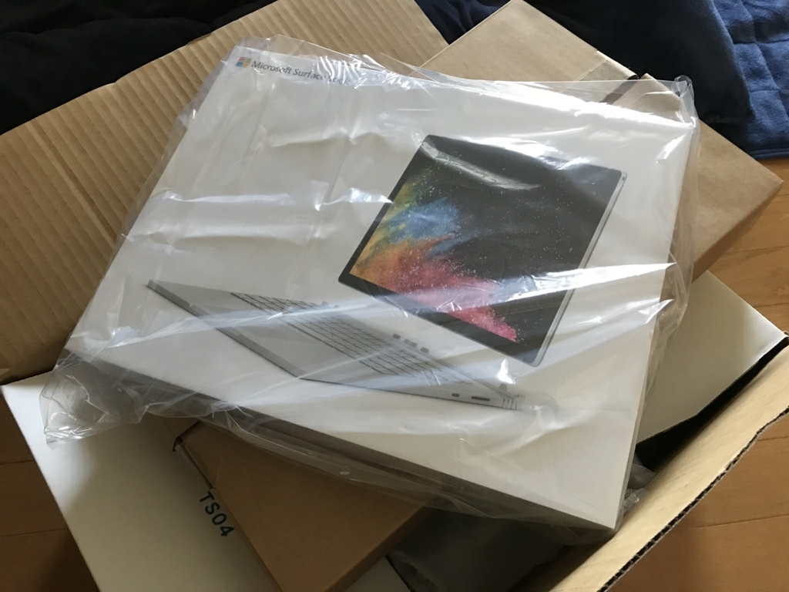
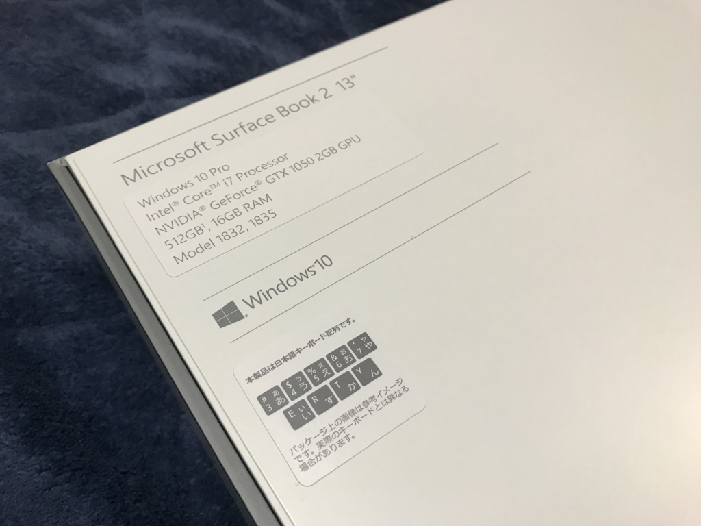
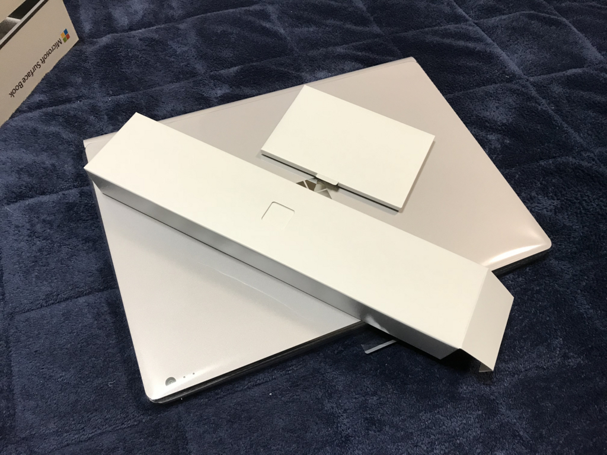
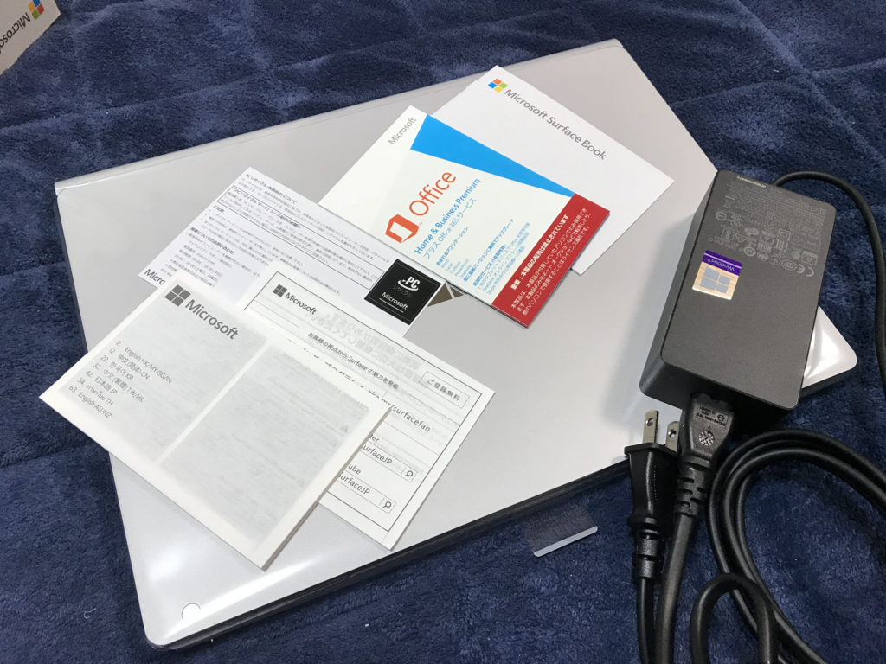
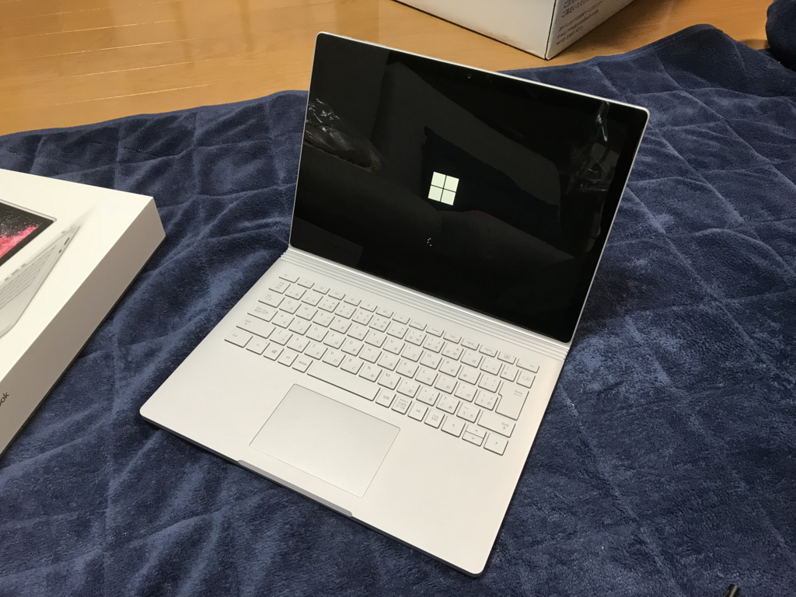
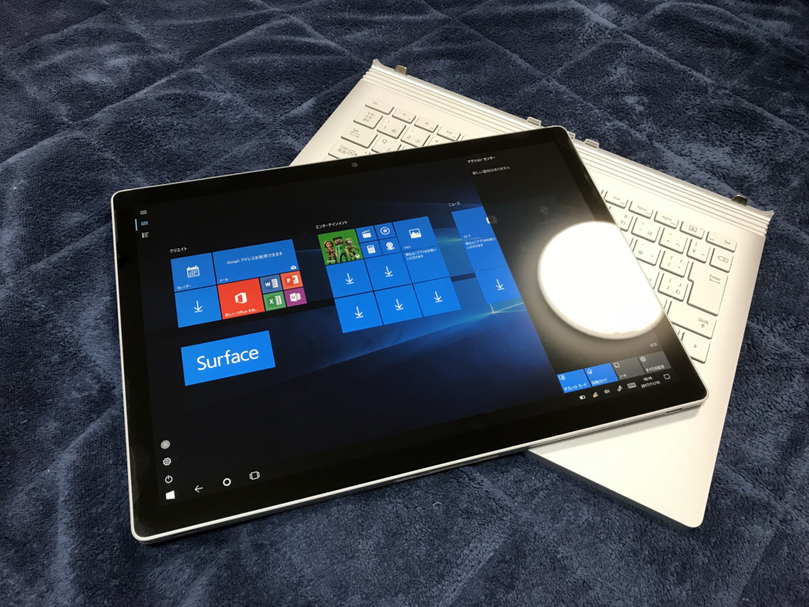
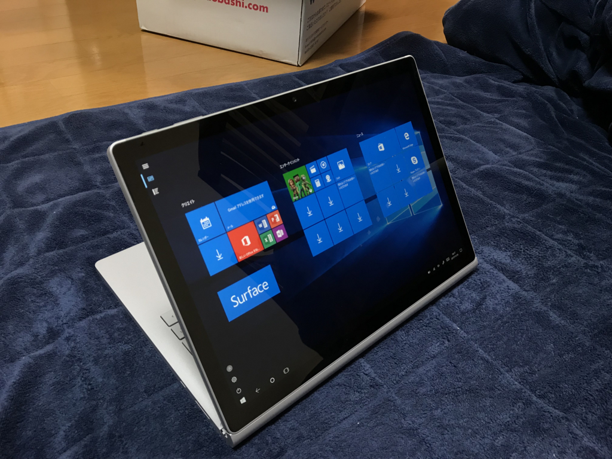

Surface Book 2 が我が家にやってきました
公開日：

いつぞやの Build でのお披露目は、いまだに覚えています。クラムシェルだとばかり思ってた Surface Book が 2 つの分裂するとは！ 残念ながら貧乏なので初代 Surface Book は買えなかったのですが、Surface Book 2 はかなり無理をして買いました（瀕死
チョイスしたのは、CPU Core i7、メモリ 16GB、SSD 512GB（ディスクリート GPU 搭載）のモデルです。老朽化したデスクトップ PC のリプレースも兼ねていたのと、Windows Mixed Reality Ultra が動くことが条件だったのですが、さすがに SSD 1TB モデルには手が出なかったので、こういうチョイスになりました。
![【2017モデル】マイクロソフト 13.5型 Surface Book 2 ノートパソコン タブレット 米国版 (i7/512GB/16GB/GTX 1050 discrete GPU w2GB GDDR5) [並行輸入品]](https://images-fe.ssl-images-amazon.com/images/I/412Lvw-114L._SL160_.jpg "【2017モデル】マイクロソフト 13.5型 Surface Book 2 ノートパソコン タブレット 米国版 (i7/512GB/16GB/GTX 1050 discrete GPU w2GB GDDR5) [並行輸入品]")
（Amazon アフィは米国版）
うちには最新のパチンコ台のスペックを凌駕する PC が 1 つもなかったのですが、これでなんとか人並みの生活を手に入れることができました。
間もなく稼働する最新のパチンコ台には演出用基板にi5-7400、GTX1050 にメモリ8GB、SSD128GB M.2搭載なので、「お前の開発環境はパチンコ未満」「お前の自慢のノートPCはパチンコ未満」というワードが成り立ってしまう。
— 菖蒲沢ひろみ♂札幌 (@hiromi_syoubuza) 2017年11月15日
当初は近所のエディオンで買おうかと思ってたのですが、この前東京に行ったとき、ヨドバシカメラの店頭で無理を言って Windows Mixed Reality の実験に協力してもらった恩義もあったので、今回はヨドバシで購入。愛媛・松山でもちゃんと発売日に届きました。Web や注文メールでの商品名が
HNL-00012 [Surface（サーフェス） Book 2 13.5インチ/第8世代 Intel Core i7/メモリ8GB/512GB/dGPU/Nvidia GEFORCE GTX 1050/Office Premium/シルバー]
になってて割と不安だったのですが、メモリもちゃんと 16GB 載ってます。8GB だと和歌山のヒトと一緒くたにされていじめられるので、メモリの搭載量は大変重要ですね。

開封式
商品自体はお昼過ぎに届いたのですが、無職の仕事を終えるまで開封は我慢。夕方ごろ、リビングで封を切りました。電源を付けてネットワークとアカウントの設定をしたら、いろいろアップデートが降ってきたので、今日は外観だけ。

パッケージは小さめで、内容物も少ない感じ。一瞬「これだけ？」と思い、箱をばらして隅々まで確かめましたが、これだけでした。まぁ、シンプルに越したことはない。

本体のほかには、電源アダプター（USB 給電× 1 付き）と説明書の類だけでした。Office のライセンスの紙っぽいものがついてきたんだけど、ぼっち 365*1をしているので、ぶっちゃけ要らんな……その分安くしてくれんかな。

バッテリーはベースにつないだ状態で半分以上残ってました。電源ボタン*2を押せばすぐに使い始めることができます。ちなみに通知トレイからバッテリーのフライアウトを開くと、バッテリーが 2 つあるのを確認できます。ビデオ再生で 17 時間も持つらしいので、普通の用途であれば電源アダプターなしでも丸一日持ち歩けそう。

さっそくディスプレイを外してみましたが……やたらデカくて薄いタブレット（15インチモデルはもっとすげえんだろな……）。一応 iPad Pro も持ってるのでそんなにありがたみはないですが*3、やっぱりちょっと圧倒されます。
ほんとは Surface Pen や Surface Dial もそろえてお絵かきを試してみたかったのですが、来月分のお小遣いまで投入してしまったので無理でした。いつかやりたい。

意外だったのは、ディスプレイを逆に刺すのが意外に便利ってこと。Surface Dock つなぐときはキーボードが要らないのですが（フルサイズのキーボードを Dock につないでいるので）、こうやって逆に刺してたたみ、書見台に立てかけておくといい感じ。タッチできるセカンドモニターに早変わりやで。
そんなわけでだいたい好印象なのですが（Windows Hello の顔認証もバッチリだぜ！）、この前まで Surface Laptop を使っていた身からすると、アルカンタラなキーボードがちょっと恋しい。この季節、金属製の筐体は手がつめてえ……orz アレはなかなかよかったので、Surface Book 2 にも導入してほしかったかもしれない。あと、OS が Creators Update だったのでアップデートめんどくさい。Windows MR やらは、週末にゆっくり試そうかなって思います。
追伸
ファンがうるさくなってきていたデスクトップ PC（24 時間稼働）を止められる目途がたって、だいぶ嬉しい。寝るとき五月蠅いんだよねー。バラして掃除して、検証端末か録画サーバーに転用しようかなって思っています。